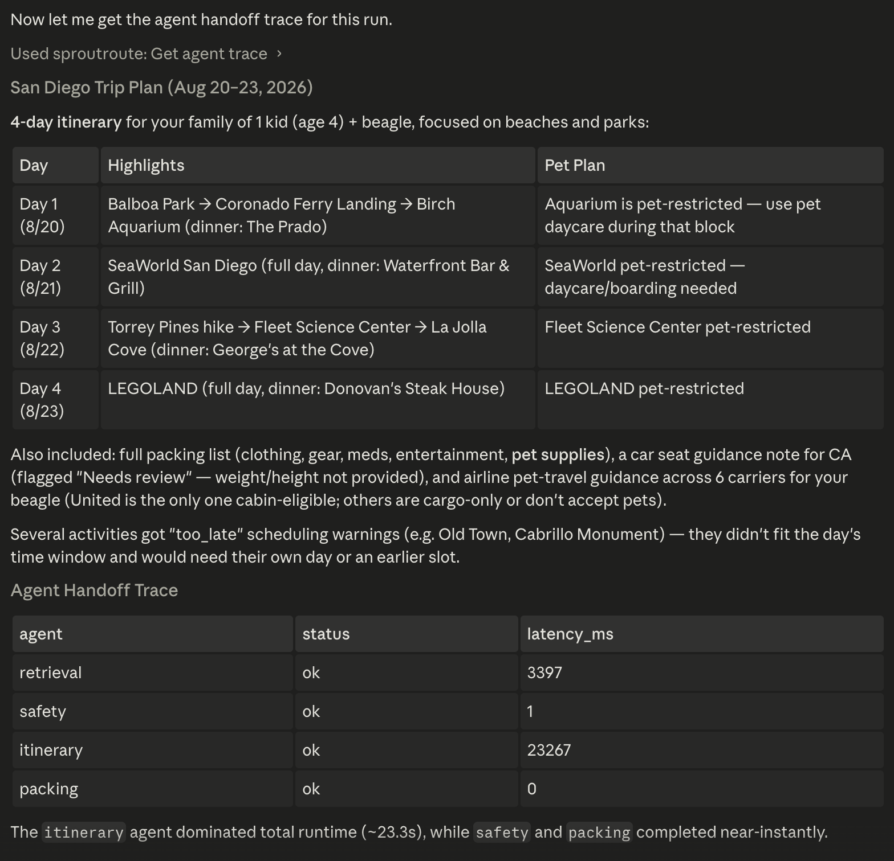

Implemented capability / agent runtime and MCP
Add agents without replacing the product.
A separate LangGraph.js path wraps SproutRoute's stable services with four specialist agents and exposes two authenticated MCP tools. The production web route remains intact.
- Agents
- 4 specialists
- MCP tools
- 2
- Rate limit
- 10/hour
- Graph budget
- 90 seconds
- Decision
- Make orchestration additive and reversible instead of migrating the working customer path.
- Why
- Delegation and trace evidence were worth testing; product stability was not worth gambling.
- Result
- Bounded specialist contracts, partial results, authentication, rate limits, a kill switch, and privacy-safe traces.
Each agent owns a service contractânot a persona.
Context agent
Geocoding, weather, attraction memory, and place enrichment.
Itinerary agent
Trip generation and deterministic scheduling.
Safety agent
Car-seat, pet, advisory, and neighborhood rules.
Packing agent
Itinerary and safety context produce a partial-failure-safe result.
The trace stores structure instead of trip data.
Each run records agent name, status, latency, and fired edges. Destinations, child ages, pet details, raw input, and generated output stay out.


The orchestrator is now a reference workload for the platform.
The gateway owns model access and quotas. The observability layer converts agent_runs into a waterfall without inventing missing cost. The red-team adapter exercises the real plan_trip JSON-RPC shape on an approved local target. These controls are implemented separately; a production rollout still requires live integration evidence.